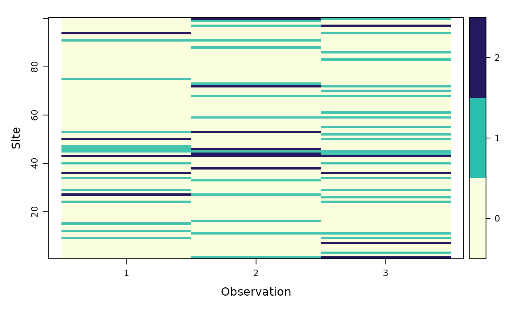

unmarkedFrameOccuMS.RdOrganizes multi-state occupancy data (currently single-season only)
along with covariates. This S4 class is required by the data argument
of occuMS
unmarkedFrameOccuMS(y, siteCovs=NULL, obsCovs=NULL,
numPrimary=1, yearlySiteCovs=NULL)An MxR matrix of multi-state occupancy data for a species,
where M is the number of sites and R is the maximum number of
observations per site (across all primary and secondary periods, if
you have multi-season data). Values in y should be integers ranging from
0 (non-detection) to the number of total states - 1. For example, if you
have 3 occupancy states, y should contain only values 0, 1, or 2.
A data.frame of covariates that vary at the
site level. This should have M rows and one column per covariate
Either a named list of data.frames of
covariates that vary within sites, or a data.frame with
MxR rows in the ordered by site-observation (if single-season) or
site-primary period-observation (if multi-season).
Number of primary time periods (e.g. seasons) for the dynamic or multi-season version of the model. There should be an equal number of secondary periods in each primary period.
A data frame with one column per covariate that varies among sites and primary periods (e.g. years). It should have MxT rows where M is the number of sites and T the number of primary periods, ordered by site-primary period. These covariates only used for dynamic (multi-season) models.
unmarkedFrameOccuMS is the S4 class that holds data to be passed
to the occuMS model-fitting function.
an object of class unmarkedFrameOccuMS
# Fake data
#Parameters
N <- 100; J <- 3; S <- 3
psi <- c(0.5,0.3,0.2)
p11 <- 0.4; p12 <- 0.25; p22 <- 0.3
#Simulate state
z <- sample(0:2, N, replace=TRUE, prob=psi)
#Simulate detection
y <- matrix(0,nrow=N,ncol=J)
for (n in 1:N){
probs <- switch(z[n]+1,
c(0,0,0),
c(1-p11,p11,0),
c(1-p12-p22,p12,p22))
if(z[n]>0){
y[n,] <- sample(0:2, J, replace=TRUE, probs)
}
}
#Covariates
site_covs <- as.data.frame(matrix(rnorm(N*2),ncol=2)) # nrow = # of sites
obs_covs <- as.data.frame(matrix(rnorm(N*J*2),ncol=2)) # nrow = N*J
#Build unmarked frame
umf <- unmarkedFrameOccuMS(y=y,siteCovs=site_covs,obsCovs=obs_covs)
umf # look at data
#> Data frame representation of unmarkedFrame object.
#> y.1 y.2 y.3 V1 V2 V1.1 V1.2 V1.3 V2.1
#> 1 0 0 0 -0.4691741 -0.71938925 -2.2000930 0.2668372 1.2154668 0.8718087
#> 2 0 1 0 -0.4409704 -0.04007548 0.1167625 0.9431525 2.0069159 1.8313292
#> 3 0 0 0 -1.1729467 -0.38164388 -1.2729267 -2.6867722 0.5354095 -0.2456206
#> 4 0 0 0 -0.3843885 1.15547632 0.2944800 -2.3003500 0.7230772 -0.8149115
#> V2.2 V2.3
#> 1 -0.9196687 0.37085164
#> 2 0.4847641 -0.07937896
#> 3 0.5007655 -0.85046161
#> 4 -1.1360465 1.03029049
#> [ reached 'max' / getOption("max.print") -- omitted 96 rows ]
summary(umf) # summarize
#> unmarkedFrame Object
#>
#> 100 sites
#> Maximum number of observations per site: 3
#> Mean number of observations per site: 3
#> Number of primary survey periods: 1
#> Number of secondary survey periods: 3
#> Sites with at least one detection: 43
#>
#> Tabulation of y observations:
#> 0 1 2
#> 230 53 17
#>
#> Site-level covariates:
#> V1 V2
#> Min. :-2.45532 Min. :-1.93212
#> 1st Qu.:-0.64589 1st Qu.:-0.58870
#> Median :-0.14524 Median :-0.03575
#> Mean :-0.09978 Mean : 0.05989
#> 3rd Qu.: 0.55132 3rd Qu.: 0.83692
#> Max. : 2.16780 Max. : 2.45254
#>
#> Observation-level covariates:
#> V1 V2
#> Min. :-2.80615 Min. :-2.97057
#> 1st Qu.:-0.75914 1st Qu.:-0.75765
#> Median :-0.12254 Median :-0.00951
#> Mean :-0.09746 Mean :-0.04333
#> 3rd Qu.: 0.61006 3rd Qu.: 0.69124
#> Max. : 2.91289 Max. : 2.96453
plot(umf) # visualize

umf@numStates # check number of occupancy states detected
#> [1] 3